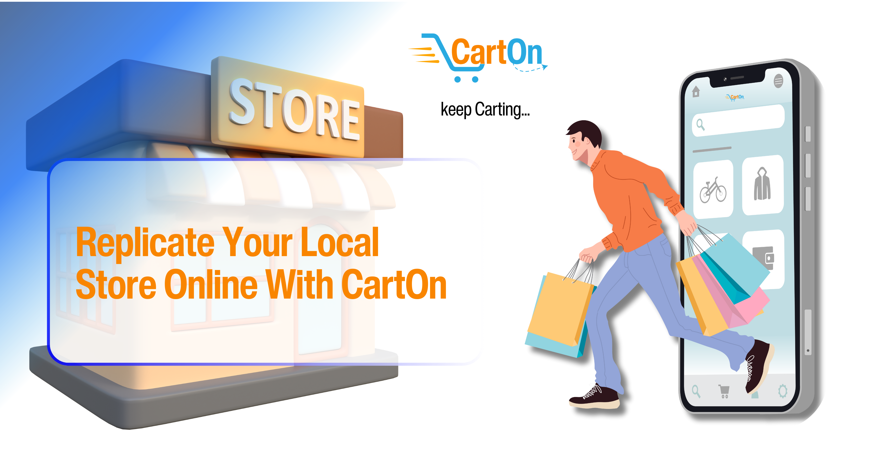
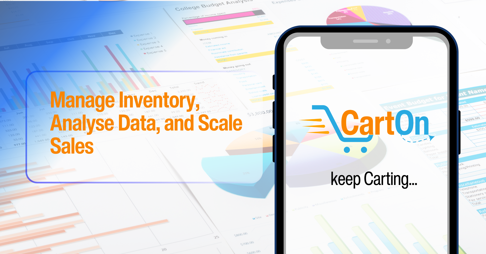

+2348131140937
admin@gritinformedia.tech

+2348131140937
admin@gritinformedia.tech

Why Join CartOn as a Vendor?
CartOn offers a unique platform for local vendors, providing a range of benefits to enhance your business:
- Increased exposure in your immediate locality.
- Reduced competition from distant sellers.
- Strict policies ensure genuine product listings, building trust in e-commerce.
- Efficient logistics with real-time tracking for an enhanced user experience.
- Faster delivery times, lower costs, and periodic promotions for a delightful shopping journey.
- Free onboarding for vendors, with subscription plans for enhanced visibility.
- Unique store options for vendors to showcase their products exclusively.
- Subscription services for cross-city promotions, reducing competition.

Get More Done With a Personalized Dashboard
By joining CartOn, vendors gain access to a powerful dashboard that helps you manage your business efficiently:
- Inventory Management: Keep track of your products and manage inventory levels.
- Sales Tracking: Monitor sales performance and analyze customer buying behavior.
- Customer Retention: Build relationships with customers and encourage repeat purchases.
- Product Performance: Analyze how each product is performing in the marketplace.
- Data Analytics Tools: Gain valuable insights through advanced analytics tools.
Ready to Join CartOn?
Fill out the form below to start your journey with us: